ggraph 是建立在ggplot2一个扩展R包，它的目标是为网络、树和系统树等等表示关系与层次的数据结构进行可视化。ggraph继承了ggplot2的图形语法，建立了面向节点和边的新的图形对象（geom），并添加了布局的概念。可以在ggplot2框架下进行更加灵活美观的网络可视化。
核心概念
ggraph 建立在三个易于理解的核心概念之上：
- **布局（Layout）**定义了节点如何放置在绘图上，即将关系结构转换为图形中每个节点的 x 和 y 值。
- **节点（Node）**是关系结构中的连接实体。可以使用
geom_node_*绘制。 - **边（Edge）**是关系结构中实体之间的连接。可以使用
geom_edge_*()进行可视化。
ggraph具有自身鲜明的特点：使用ggraph()初始化图形，并指定了布局layout；有用于节点（node）和边（edge）的特有的几何对象（geom）和标度调整方法（scale）。Layout、Node和Edge是ggraph可视化的三个基本要素。
布局（Layout）
布局是绘制特定图形结构时节点的垂直和水平位置。由于布局是节点空间位置的全局规范，因此它跨越了绘图中的所有层，因此应在调用到geom或stat之外进行定义。ggraph()是作为图层的初始化使用。
示例：
library(ggraph)
library(igraph)
graph <- graph_from_data_frame(highschool)
# 未指定布局，默认布局
ggraph(graph) +
geom_edge_link(aes(colour = factor(year))) +
geom_node_point()
Using `stress` as default layout
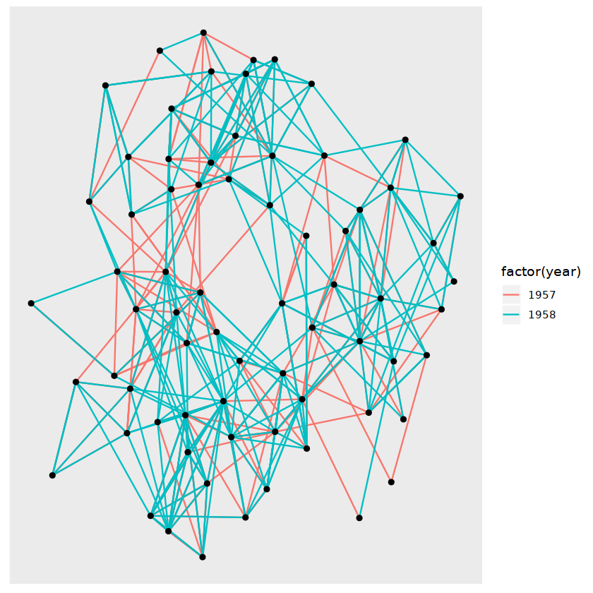
ggraph使用
ggraph(graph, layout = "auto", ...)
说明：
- graph：图形的对象。数据类型：
igraph-graph_from_data_frame()，tbl_graph-tbl_graph()，layout_tbl_graph-create_layout(), - layout：要创建的布局类型。
- …：参数传递到布局
ggraph 中可用的不同布局类型均有不同的呈现方式。任何类型的图形数据都可以表示为tbl_graph对象
包含以下layout：
- auto：默认布局，
layout_tbl_graph_auto() - igraph：igraph布局算法，
layout_tbl_graph_igraph()- tree
- sugiyama
- bipartite
- star
- circle
- nicely
- dh
- gem
- graphopt
- grid
- mds
- sphere
- randomly
- fr
- kk
- drl
- lgl
- dendrogram：将树状图形中的节点布置为树叶图，
layout_tbl_graph_dendrogram() - manual：让用户手动指定每个节点的位置，
layout_tbl_graph_manual() - linear：以线性或圆形排列节点以制作弧形图，
layout_tbl_graph_linear() - matrix：在对角线上排列节点，从而准备将其用于制作矩阵图，
layout_tbl_graph_matrix() - treemap：从图形中创建树图，即显示加权层次结构的矩形空间，
layout_tbl_graph_treemap() - circlepack：将层次结构显示为圆圈内的圆圈，
layout_tbl_graph_circlepack() - partition：创建冰柱或太阳爆发图，
layout_tbl_graph_partition() - hive：轴上的定位节点根据节点属性从中心展开，
layout_tbl_graph_hive()
对于igraph 定义了一系列不同的布局功能，这些功能都可以通过使用参数指定特定布局的布局提供。为了最大限度地减少键入所有 igraph 算法也可以直接传递到参数中。
library(ggraph)
library(igraph)
graph <- graph_from_data_frame(highschool)
ggraph(graph, layout = 'circle') +
geom_edge_link(aes(colour = factor(year))) +
geom_node_point()
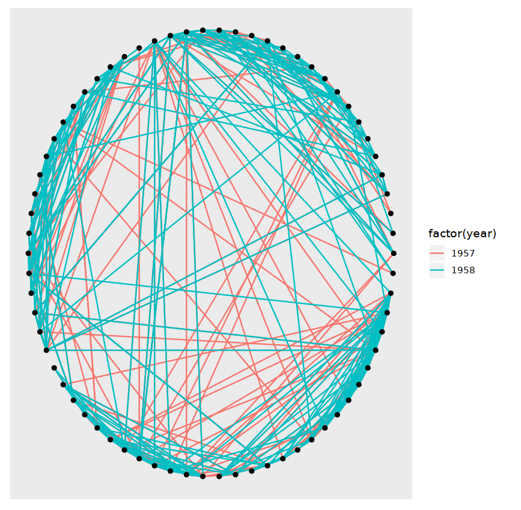
igraph对象
graph_from_data_frame(d, directed = TRUE, vertices = NULL)
说明：
- d：包含两列Node关联信息的数据框。
- directed：是否创建定向图形
- vertices：包含Node信息的数据框
示例：
library(igraph)
actors <- data.frame(name = c("Alice", "Bob", "Cecil", "David", "Esmeralda"),
age = c(48,33,45,34,21),
gender = c("F","M","F","M","F"))
relations <- data.frame(from = c("Bob", "Cecil", "Cecil", "David", "David", "Esmeralda"),
to = c("Alice", "Bob", "Alice", "Alice", "Bob", "Alice"),
same.dept = c(FALSE,FALSE,TRUE,FALSE,FALSE,TRUE),
friendship = c(4,5,5,2,1,1), advice=c(4,5,5,4,2,3))
graph <- graph_from_data_frame(d = relations,
directed=TRUE,
vertices=actors)
print(graph, e=TRUE, v=TRUE)
IGRAPH 404a27f DN-- 5 6 --
+ attr: name (v/c), age (v/n), gender (v/c), same.dept (e/l),
| friendship (e/n), advice (e/n)
+ edges from 404a27f (vertex names):
[1] Bob ->Alice Cecil ->Bob Cecil ->Alice David ->Alice
[5] David ->Bob Esmeralda->Alice
tbl_graph对象
tbl_graph(nodes = NULL, edges = NULL, directed = TRUE, node_key = "name")
## S3 method for class 'igraph'
as_tbl_graph(x, ...)
## S3 method for class 'data.frame'
as_tbl_graph(x, directed = TRUE, ...)
说明：
- nodes：包含Node信息的数据框。
- edges：包含两列Node关联信息的数据框。
- directed：是否创建定向图形
示例：
library(tidygraph)
actors <- data.frame(name = c("Alice", "Bob", "Cecil", "David", "Esmeralda"),
age = c(48,33,45,34,21),
gender = c("F","M","F","M","F"))
relations <- data.frame(from = c("Bob", "Cecil", "Cecil", "David", "David", "Esmeralda"),
to = c("Alice", "Bob", "Alice", "Alice", "Bob", "Alice"),
same.dept = c(FALSE,FALSE,TRUE,FALSE,FALSE,TRUE),
friendship = c(4,5,5,2,1,1), advice=c(4,5,5,4,2,3))
graph <- tbl_graph(nodes = actors, edges = relations)
graph
# A tbl_graph: 5 nodes and 6 edges
#
# A directed acyclic simple graph with 1 component
#
# Node Data: 5 x 3 (active)
name age gender
<fct> <dbl> <fct>
1 Alice 48 F
2 Bob 33 M
3 Cecil 45 F
4 David 34 M
5 Esmeralda 21 F
#
# Edge Data: 6 x 5
from to same.dept friendship advice
<int> <int> <lgl> <dbl> <dbl>
1 1 2 FALSE 4 4
2 3 1 FALSE 5 5
3 3 2 TRUE 5 5
# … with 3 more rows
layout_tbl_graph对象
create_layout(graph, layout, ...)
说明：参考ggraph()
示例：
library(ggraph)
library(igraph)
graph <- graph_from_data_frame(highschool)
layout <- create_layout(graph, layout = 'circle')
head(layout)
| x | y | name | .ggraph.orig_index | circular | .ggraph.index | |
|---|---|---|---|---|---|---|
| 1 | 1.0000000 | 0.00000000 | 1 | 1 | FALSE | 1 |
| 2 | 0.9959743 | 0.08963931 | 2 | 2 | FALSE | 2 |
| 3 | 0.9839296 | 0.17855689 | 3 | 3 | FALSE | 3 |
| 4 | 0.9639629 | 0.26603685 | 4 | 4 | FALSE | 4 |
| 5 | 0.9362349 | 0.35137482 | 5 | 5 | FALSE | 5 |
| 6 | 0.9009689 | 0.43388374 | 6 | 6 | FALSE | 6 |
节点（Node）
网络中的节点是连接的实体。虽然图形中的节点是实体的抽象概念，布局是实体的物理位置，但节点呈现是实体的视觉表现。布局提供了 x 和 y 坐标，这些坐标可用于在绘图窗口中以不同的方式绘制节点。
library(ggraph)
library(igraph)
gr <- graph_from_data_frame(highschool)
ggraph(gr, layout = 'circle') +
geom_point(aes(x=x, y=y))
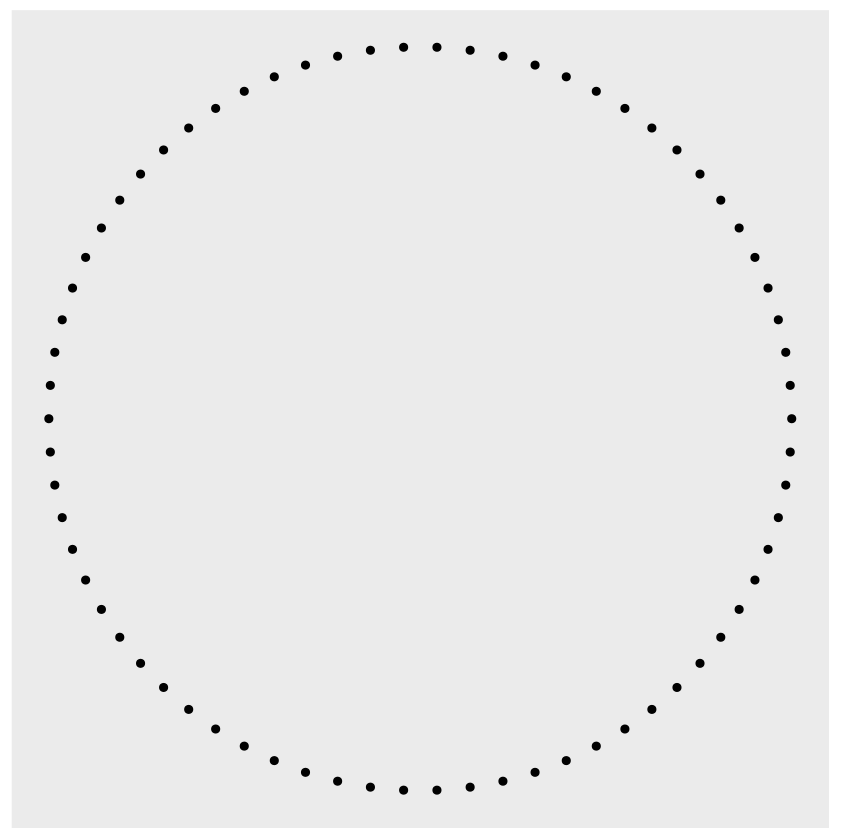
正如上面介绍的，布局返回节点位置和元数据，这用作ggplot2中默认绘图数据。
推荐使用以下方式：
library(ggraph)
library(igraph)
gr <- graph_from_data_frame(highschool)
ggraph(gr, layout = 'circle') +
geom_node_point()
geom_node_*
geom_node_pointgeom_node_arc_bargeom_node_circlegeom_node_rangegeom_node_textgeom_node_labelgeom_node_tilegeom_node_voronoi
示例1
library(ggraph)
library(igraph)
gr <- graph_from_data_frame(flare$edges, vertices = flare$vertices)
ggraph(gr, layout = 'partition') +
geom_node_tile(aes(fill = depth))
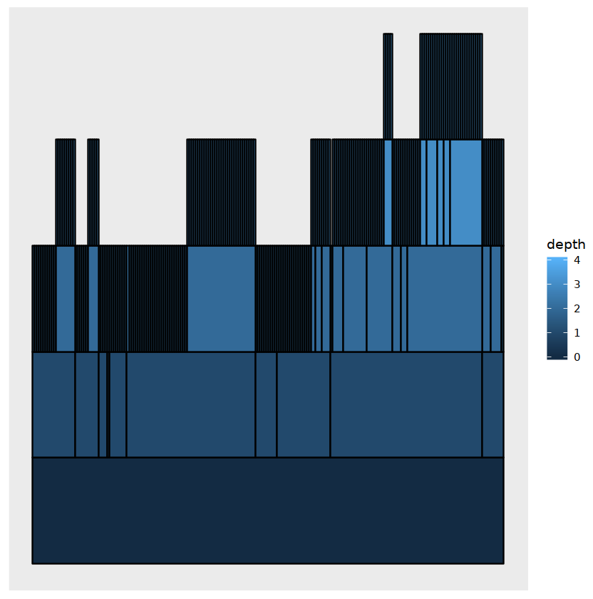
示例2
library(ggraph)
library(igraph)
gr <- graph_from_data_frame(flare$edges, vertices = flare$vertices)
ggraph(gr, layout = 'partition', circular = TRUE) +
geom_node_arc_bar(aes(fill = depth)) +
coord_fixed()
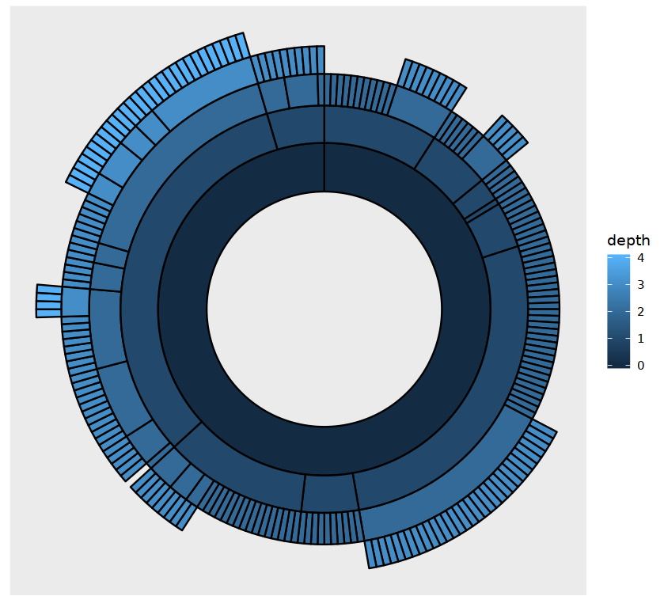
示例3
library(ggraph)
library(igraph)
gr <- graph_from_data_frame(highschool)
ggraph(gr, layout = 'circle') +
geom_node_point() +
geom_node_text(aes(label = name), repel = T)
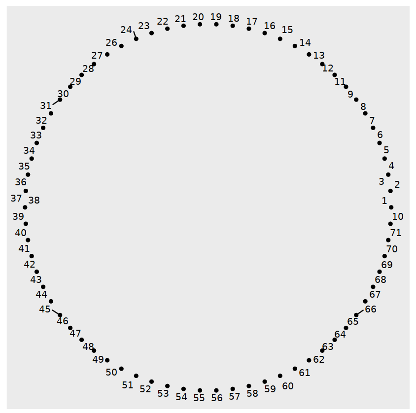
边（Edge）
边是一个抽象的概念，表示两个节点实体之间的关系。
geom_edge_*
geom_edge_arcgeom_edge_bendgeom_edge_densitygeom_edge_diagonalgeom_edge_elbowgeom_edge_fangeom_edge_hivegeom_edge_loopgeom_edge_parallelgeom_edge_pointgeom_edge_spangeom_edge_tile
示例1
library(ggraph)
library(igraph)
graph <- graph_from_data_frame(highschool)
ggraph(graph, layout = 'kk') +
geom_edge_link(aes(colour = factor(year)))
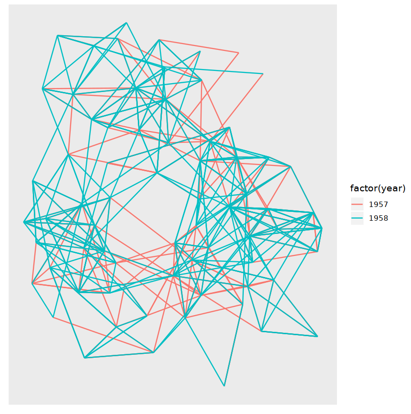
示例2
library(ggraph)
library(igraph)
graph <- graph_from_data_frame(highschool)
ggraph(graph, layout = 'kk') +
geom_edge_fan(aes(colour = factor(year)))
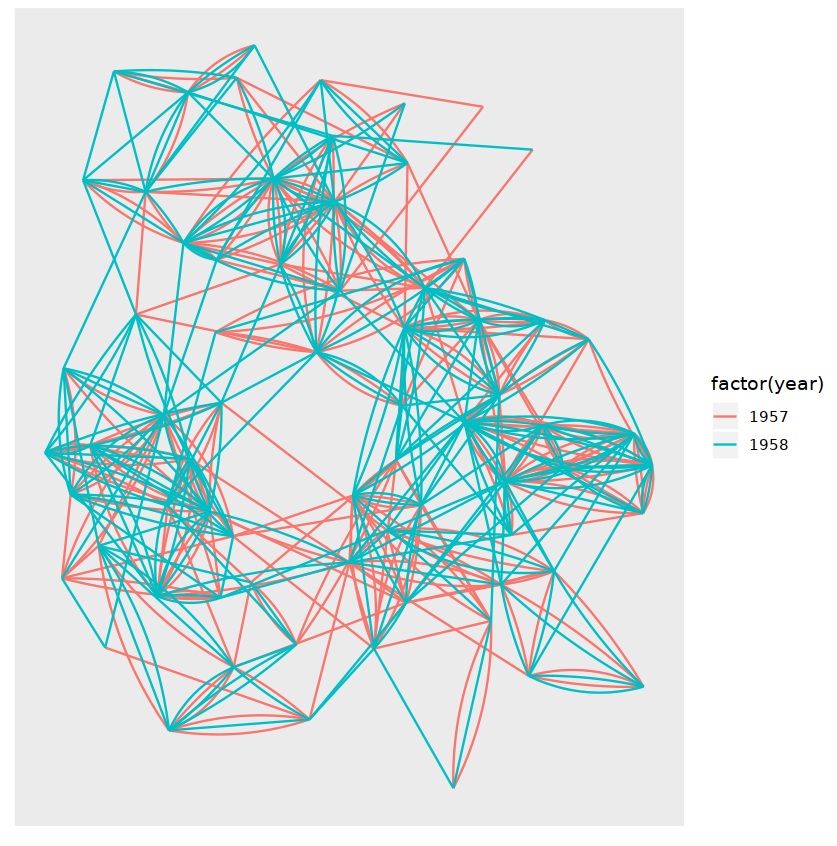
示例3
library(ggraph)
library(igraph)
graph <- graph_from_data_frame(highschool)
ggraph(graph, layout = 'kk') +
geom_edge_parallel(aes(colour = factor(year)))
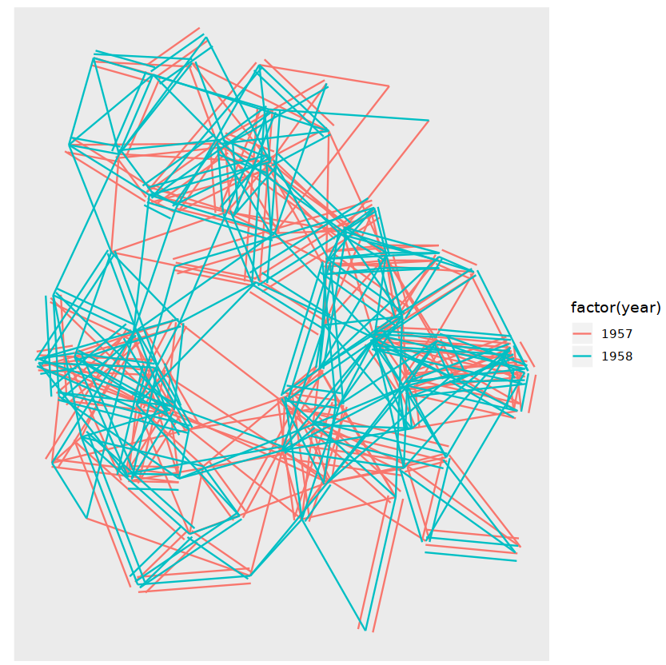
示例4
library(ggraph)
library(igraph)
graph <- graph_from_data_frame(highschool)
ggraph(graph, layout = 'kk') +
geom_edge_density(aes(fill = factor(year)))
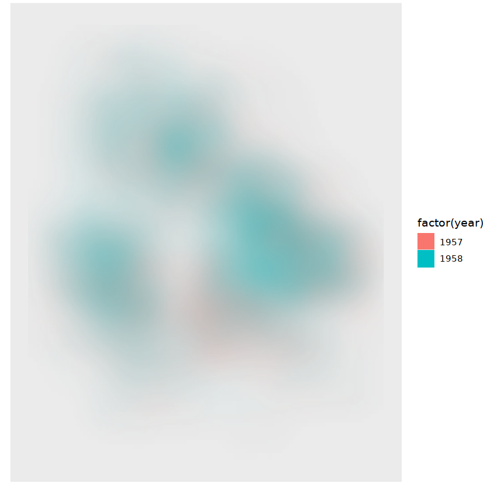
示例5
library(ggraph)
library(igraph)
graph <- graph_from_data_frame(highschool)
ggraph(graph, layout = 'kk') +
geom_edge_arc(aes(colour = factor(year)))
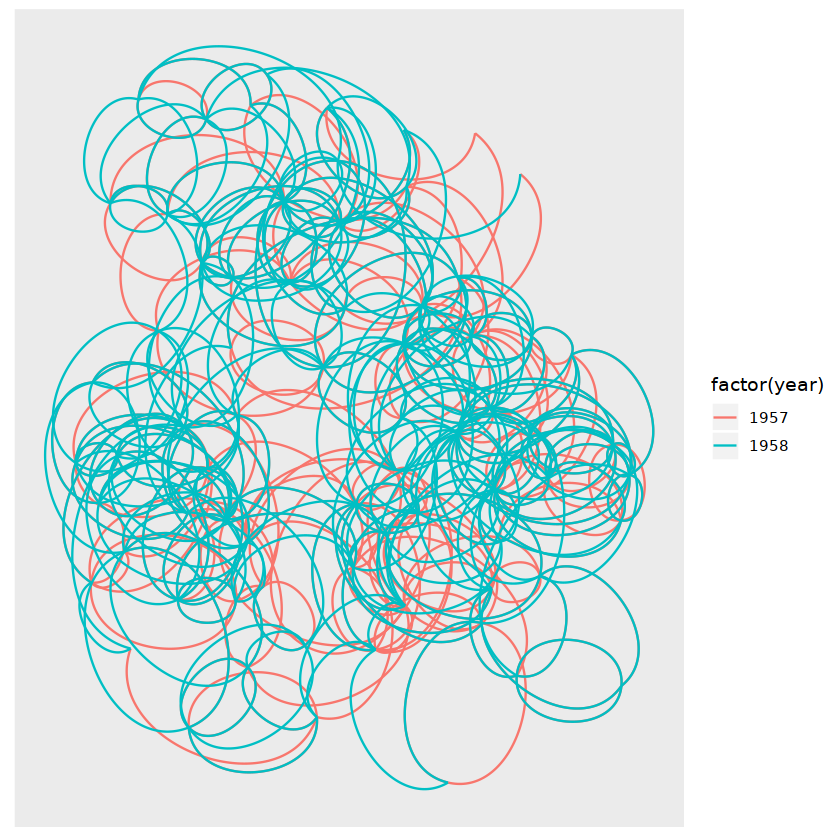
箭头
示例
library(ggraph)
library(igraph)
graph <- graph_from_data_frame(highschool)
ggraph(graph, layout = 'kk') +
geom_edge_link(aes(colour = factor(year)),
arrow = arrow(length = unit(4, 'mm')),
start_cap = circle(3, 'mm'),
end_cap = circle(3, 'mm')) +
geom_node_point(size = 5)
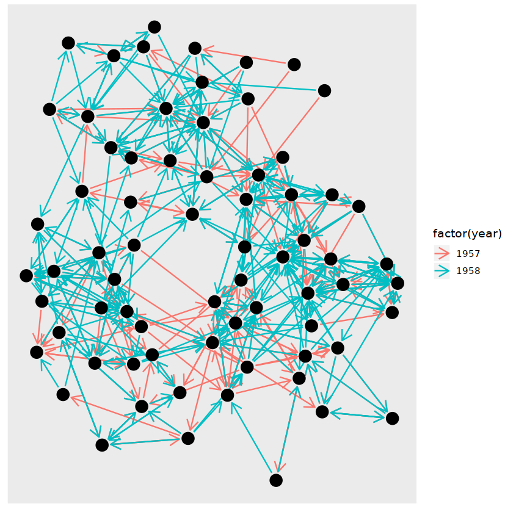
其他函数
facet_nodes()、facet_edges()、facet_graph()：分片。theme_graph()：ggraph的主题。scale_edge_*：边的标度
最终示例
library(ggraph)
library(igraph)
actors <- data.frame(name = c("Alice", "Bob", "Cecil", "David", "Esmeralda"),
age = c(48,33,45,34,21),
gender = c("F","M","F","M","F"))
relations <- data.frame(from = c("Bob", "Cecil", "Cecil", "David", "David", "Esmeralda"),
to = c("Alice", "Bob", "Alice", "Alice", "Bob", "Alice"),
same.dept = c(FALSE,FALSE,TRUE,FALSE,FALSE,TRUE),
friendship = c(4,5,5,2,1,1), advice=c(4,5,5,4,2,3))
graph <- graph_from_data_frame(d = relations,
directed=TRUE,
vertices=actors)
ggraph(graph, layout = 'kk') +
geom_edge_link(mapping = aes(edge_width = friendship, edge_color = advice),
arrow = arrow(length = unit(4, 'mm')),
start_cap = circle(3, 'mm'),
end_cap = circle(3, 'mm')) +
geom_node_point(size = 5,
mapping = aes(colour = gender),
alpha = 0.5) +
geom_node_text(mapping = aes(label=name),repel = T,size = 4) +
scale_edge_width_continuous(range = c(0.5,0.9)) +
scale_edge_color_continuous(low = "orange",high = "red")+
scale_color_manual(values = c("red", "blue"))+
theme_graph()
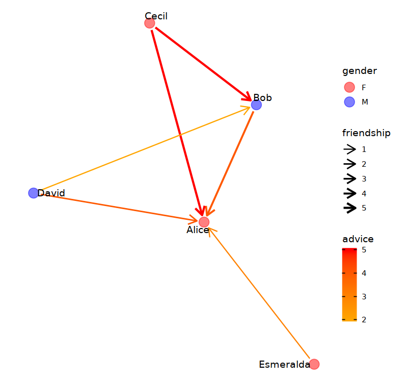